XDaQuestão
Questões de Informática
1. A Área de Transferência é um recurso presente em
diversos sistemas operacionais, como o Windows 10.
Nesse sistema operacional, a Área de Transferência
2.Em um computador com mouse e o sistema operacional
Windows 10, ambos em suas configurações padrão, colocou-se em
uma pasta três arquivos, de nomes A.txt, B.txt
e C.txt. Em seguida foram realizados os seguintes procedimentos:
1. Os três artigos foram selecionados.
2. Pressionou-se o botão direito do mouse, com o cursor do mouse sobre A.txt.
3. Na lista de opções que surge na tela, selecionou-se Renomear.
4. O nome A.txt é selecionado para permitir a sua alteração, e, em seguida, digitou-se X seguido da tecla Enter.
Após a digitação realizada em 4), os arquivos A.txt, B.txt e C.txt passarão a ter, respectivamente, os nomes:
3. Um usuário de um computador com o sistema operacional Windows 10 pretende nomear alguns de seus arquivos.
A alternativa que apresenta apenas nomes que podem ser utilizados é:
4. O Editor de texto MS-Word 2016, em português e em
sua configuração padrão, permite a inserção de Caixa de
Texto, sobre
a qual é correto afirmar que ela
5. No editor de texto MS-Word 2016, em português e em sua
configuração padrão, foi digitado um parágrafo, conforme
mostrado
a seguir, seguido da tecla ENTER.
Comprou-se um microcomputador de cor preta, com dois discos
rígidos e com quatro entradas
USB.
Posteriormente, deu-se um duplo-clique no meio da palavra
microcomputador e, a seguir, clicou-se sobre o botão Itálico
(do grupo Fonte da guia Página Inicial). Como resultado,
6. No MS-Windows 7, na sua configuração padrão, para se criar um atalho da pasta Testando na área de trabalho, de acordo com a disposição da figura a seguir,
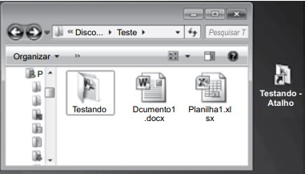bastou arrastar a pasta com o mouse e manter pressionada(s) a(s) tecla(s)
7. Para alterar a forma como arquivos e pastas funcionam e como itens são exibidos no computador, o MS-Windows 7, na sua configuração padrão, disponibiliza esse recurso por meio do seguinte caminho:
8. A tabela a seguir foi criada no MS-Excel 2010, na sua configuração padrão.
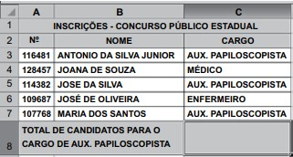A fórmula da célula C8, que determina o total de candidatos inscritos para o cargo de Aux. Papiloscopista, é
9. O número de questões da prova preambular de um concurso público foi distribuído conforme mostra a tabela a seguir, criada no MS-Excel 2010, na sua configuração padrão.

Para calcular o percentual de questões de Língua Portuguesa no concurso, a fórmula correta da célula C3, que está no formato de número, é
10. A planilha a seguir foi criada no MS-Excel 2010, na sua configuração padrão, e apresenta uma lista de candidatos aprovados em uma prova de seleção para um concurso.
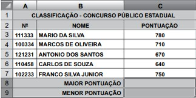As fórmulas que identificam a maior pontuação (célula C8) e a menor pontuação (célula C9) são, respectivamente,
11. A tela a seguir mostra o sumário com a estrutura do arquivo Trabalho doc, criado no MS-Word 2010, na sua configuração padrão.
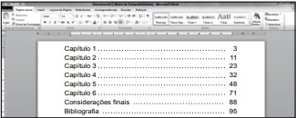A seguir, tem-se a tela de impressão do arquivo Trabalho.doc
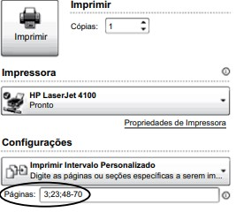De acordo com a configuração da tela, serão impressas, respectivamente,
12. Um estudante desatento teve seus dados bancários, financeiros e informações sobre seus hábitos na internet transmitidos de seu notebook para uma empresa localizada na Ásia – sem o seu conhecimento ou consentimento – por um programa que se alojou no seu computador. Esse programa é classificado como
13. O MS-Internet Explorer 8, na sua configuração padrão, permite que o usuário insira um URL padrão, ou seja, ao abrir o navegador o endereço será acessado automaticamente, conforme mostra a figura a seguir.
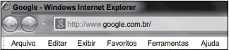Para usar o recurso, é necessário acessar o menu
14. Um vendedor de uma empresa precisa enviar uma mensagem para um cliente por meio do MS-Outlook 2010, na sua configuração padrão. Para que o remetente possa fazer o acompanhamento do e-mail, antes de enviá-lo, deve acessar a guia
15. No MS-Windows 7, quando se pressiona a tecla PrtScr ou similar, exemplos: Assinale a alternativa que preenche corretamente a lacuna do texto.
PrtScrn, PrtSc, PrtScn, PrintScreen, Prt/Sysreq,
entre outros, uma imagem da tela é copiada para a _______.
Isso se chama captura de tela.
16. Considere os itens a seguir:
I. Clock do processador
II. Memória RAM
III. Espaço livre no disco rígido
Com relação aos itens apresentados, assinale a alternativa que contém os requisitos mínimos necessários do computador para se instalar e executar o MS-Windows 7, versão 64 bits.
17. Na figura a seguir, é exibida uma janela do MS-Windows 7, na sua configuração original:
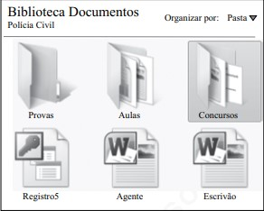Com base nos objetos exibidos na janela e considerando que um dos objetos está selecionado, pode-se afirmar que
18. Observe, na figura a seguir, os parâmetros de impressão de um documento do MS-Word 2010, na sua configuração padrão.
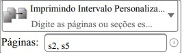Assinale a alternativa que contém o que será impresso.
19. Assinale a alternativa que contém o tipo de quebra indicado
pelo ícone, encontrado no menu Layout da Página do MS-Word 2010.
20. Observe o gráfico construído no MS-Excel 2010.
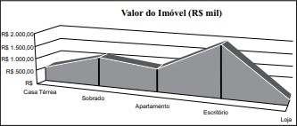Com relação ao gráfico, assinale a alternativa correta.
21. Observe o documento do MS-Word 2010, apresentado parcialmente na figura a seguir.

A figura foi disposta no texto da seguinte forma:
22. No editor de planilha eletrônica MS-Excel 2016 (em português e em sua configuração padrão), a seguinte planilha foi elaborada, apresentando as cores dos itens na coluna A e as quantidades dos itens A, B e C, conforme suas cores, nas colunas B, C e D.

Nessa planilha, as células da coluna E apresentam fórmulas para calcular automaticamente, as quantidades de itens de cada cor, enquanto as células da linha 6 contêm fórmulas para calcular, de forma automática, as quantidades de cada item.
Em particular, fórmulas corretas para as células E3 e C6, compatíveis com o apresentado são, respectivamente:
23. No editor de planilha eletrônica MS-Excel 2016 (em português e em sua configuração padrão), uma planilha estava sendo editada quando o usuário decidiu alterar o layout de página dessa planilha, visando uma impressão futura na forma desejada. As opções disponíveis para orientação de página de uma planilha no MS-Excel 2016 são
24.Assinale a alternativa que contém um endereço válido de correio eletrônico:
25. Considere que um usuário de correio eletrônico escreveu uma mensagem com dois destinatários, um no campo Para e outro no campo
Com Cópia Para. Além disso, anexou dois arquivos à mensagem. Nesse caso,
26. A tecnologia VoIP (Voz sobre IP) vem sendo amplamente utilizada, e tem como sua principal finalidade
27. Por meio do botão Quebras, presente no grupo Configurar Páginas da guia Layout do editor de texto MS-Word 2016 (em português e em sua configuração padrão), pode-se selecionar diversas opções de quebra, categorizadas em
28. Diante da necessidade de selecionar e avaliar aplicativos voltados à realização de videoconferências, um responsável pelo setor de informática da empresa pode recomendar os seguintes aplicativos:
29. O URL (Uniform Resource Locator) possui algumas partes, como a que indica o protocolo utilizado. Essaparte é denominada
30. Um dispositivo de segurança muito utilizado para proteger um computador contra acessos não autorizados vindos da Internet é o firewall pessoal. Quando esse dispositivo é configurado adequadamente, ele é capaz de alguns tipos de proteção, como
31. Existe uma parte da Internet considerada como uma Internet invisível, também chamada de deep web. Assinale a afirmação correta relacionada com a deep web.
32. Deseja-se adquirir um dispositivo de armazenamento externo para um microcomputador. Com relação a esses dispositivos, é correto afirmar que quando comparado ao disco HD externo, o dispositivo SSD externo
33. Um usuário de um microcomputador do tipo PC, com o sistema operacional Windows 10 instalado na sua configuração padrão, deseja saber as configurações de hardware desse PC, como o processador presente e a quantidade de memória instalada. Para isso, basta
34. Um tipo de fraude que ocorre na Internet denomina-se phishing, que possui como característica
35. Um tipo de softwares maliciosos denomina-se ransomware, que tem como principal forma de atuação
36. No MS-Windows 7, em sua configuração padrão, existem aplicativos acessórios para manipulação de alguns tipos de arquivos. Assinale a alternativa que apresenta o nome de um aplicativo acessório do MS-Windows 7 utilizado para editar arquivos de imagem.
37. Um agente de escolta e vigilância penitenciária que queira procurar informações em páginas na internet precisará, entre outras coisas, utilizar um aplicativo do tipo_______.
Assinale a alternativa que preenche corretamente a lacuna.
38. Na arquitetura TCP/IP, os protocolos que atuam na camada de transporte são
39. Depois de estabelecida a conexão do servidor com a internet, assinale a alternativa com o comando ftp que baixa um arquivo remoto para a máquina do usuário.
40. A criptografia hash permite que seja calculado um identificador digital de tamanho fixo, chamado de valor hash , a partir de uma string de qualquer tamanho.
Assinale a alternativa que contém o algoritmo hash que trabalha com o valor fixo de 20 bytes.
41. A figura a seguir apresenta o grupo Configurar Página, da guia Layout da Página, do MS-Word 2010, em sua configuração padrão.
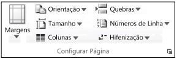Assinale a alternativa que identifica a opção do grupo que permite alternar as páginas entre os layouts: Retrato (vertical) e Paisagem (horizontal).
42. No MS-Windows XP, em sua configuração padrão, para remover ou ejetar, com segurança, um HD externo conectado em uma porta USB, o usuário pode: clicar sobre o ícone _________ da área de notificações _________,selecionar o dispositivo que será removido e, então, desconectar o dispositivo do computador quando o Windows avisar que é seguro. Considere que o dispositivo não está sendo usado e pode ser removido.
Assinale a alternativa que preenche, correta e respectivamente, as lacunas do enunciado.
43. Observe a figura a seguir, extraída do MS-Excel 2010, em sua configuração padrão. Ela apresenta parte de uma planilha, na qual as células B2, B3 e B4 contêm valores no formato Número, com duas casas decimais.
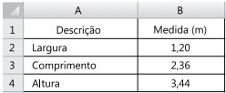Assinale a alternativa que contém os novos valores das células B2, B3 e B4, nesta ordem, quando nelas for aplicado,
apenas uma vez, o recurso associado ao botão , do grupo Número, da guia Início.
44. Considere a figura a seguir, extraída do MS-Windows XP, em sua configuração padrão. Ela apresenta parte da pasta Acessórios, do Menu Iniciar.
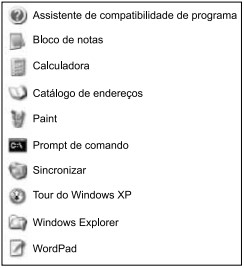Assinale a alternativa que contém o nome do programa que oferece um ponto de entrada para a digitação de comandos e permite executar tarefas no computador sem utilizar a interface gráfica do Windows.
45. Considere a figura, extraída do MS-Outlook 2007, em sua configuração padrão.
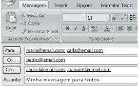Assinale a alternativa que descreve corretamente o que acontece com o destinatário do endereço eletrônico pedro@email.com, quando a mensagem for enviada.
46. O Comitê Gestor da Internet no Brasil considera como a ciência e a arte de escrever mensagens em forma cifrada ou em código.
Assinale a alternativa que preenche corretamente a lacuna do enunciado.
47. A figura seguinte exibe o conteúdo do menu Comunicações, que pertence ao menu “Iniciar > Todos os programas > Acessórios” do MS-Windows XP Professional, em sua configuração padrão.
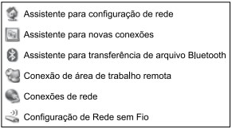Assinale o item desse menu que permite ao usuário controlar outro computador, utilizando apenas o nome ou o endereço IP do controlado na rede. Considere que o computador a ser controlado roda o MS-Windows XP Professional e está previamente configurado para essa ação.